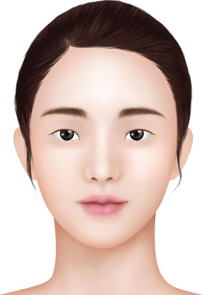
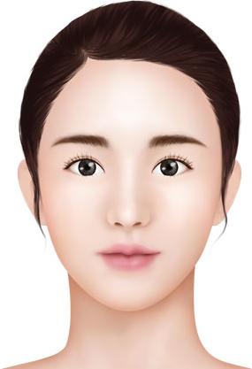

오직! 결과로 말하는 청담i성형외과만의 높은 기술력
쌍꺼풀 수술의 방법
 Before
 After
매몰법
비 절개 방법이란? 이 방법은 절개없이 자연스러운 주름을 만듭니다. 그것은 눈꺼풀에 1-2mm의 3-4 작은 슬릿을하게 한 다음 비 흡수성 실을 사용하여 주름을 만드는 피부에 눈꺼풀 올림근 근육이나 눈꺼풀을 연결합니다.
누가 혜택을 누릴 수 있습니까?
1. 지방이 적고 얇은 눈꺼풀을 가진 사람
2. 아주 적은 붓기를 원하는 사람
3. 짧은 회복을 원하는 사람
3. 자연적인 결과를 찾는 사람
1.수술전
2.작은 절개창
3.단매듭 연속 매몰법
4.한가닥 실로만 수술
5.봉합 필요 없음
6.수술후
운영정보
| 지속 | 30분 |
| 절개위치 | 3-5mm |
| 입원 | 없음 |
| 회복 | 5일 |
| 마취 | 국소마취 |
| 스티치 | 제거 없음 |
부분 절개방법
비 절개 방법이란? 절개법과 매몰법의 중간 형태로서 국소마취로 진행되며 예정된 쌍꺼풀 라인에 약 3~4mm 정도의 작은 절개창을 2~3개 정도 만든 후 상안검거근과 피부의 진피층을 연결해주는 방법입니다
누가 혜택을 누릴 수 있습니까?
1. 눈두덩이에 지방이 많은 사람
2. 쌍꺼풀 흉터가 부담스러우신 사람
3. 보통의 붓기를 원하는 사람
1.수술전
2.절개선
3.지방제거
4.상안검거근과 진피봉합
5.봉합
6.수술후
운영정보
| 지속 | 40 ~ 50분 |
| 절개위치 | 3 - 5mm |
| 입원 | 없음 |
| 회복 | 7일 |
| 마취 | 국소마취 |
| 스티치 | 3일 |
절개법
절개법 방법이란? 국소마취를 통해 수술이 진행되며 예정된 쌍꺼풀 라인에 절개를 가하고 필요한 경우 과다한 지방, 근육, 피하조직, 및 처진 피부를 제거한 후 비 흡수성 봉합사를 사용하여 상안검거근을 직접 피부의 진피층에 연결함으로써 쌍꺼풀을 만들어 주게 됩니다.
누가 혜택을 누릴 수 있습니까?
1. 눈두덩이에 지방이 과다한 사람
2. 안검하수가 있는 사람
3. 양쪽 눈의 비대칭이 심한 사람
1.수술전
2.절개선
3.지방제거
4.상안검거근과 진피봉합
5.봉합
6.수술후
운영정보
| 지속 | 1시간 |
| 절개위치 | 눈의 주름을 따라 |
| 입원 | 없음 |
| 회복 | 1 ~ 2주 |
| 마취 | 국소마취 |
| 스티치 | 4 ~ 5일 |